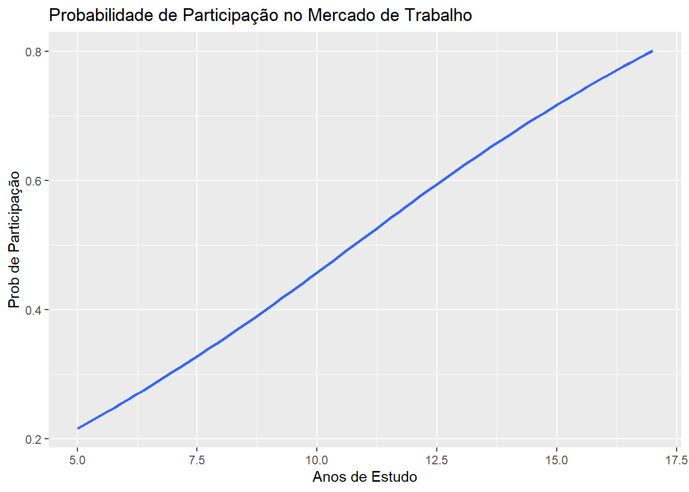

9.1 Modelos com Variáveis Dependentes Qualitativas
9.1.1 Variáveis Dependentes Binárias
Exemplos de resultados binários:
Um consumidor compra ou não compra um produto.
Um juiz acata ou não um determinado pedido.
Um indíviduo decide ou não se vai procurar emprego.
Um homicídio feminino é classificado como feminicídio ou não.
Variável dependente binária:
A variável de resultado será, \(y = 1\), se o evento de interesse ocorre, caso o contrario \(y=0\). Os modelos de Variáveis Dependentes Limitadas são bastante difundidos nas análises empíricas nas ciências sociais.
9.1.2 O Modelo de Probabilidade Linear
O modelo será especificado como:
\[y= \beta_0 + \beta_1 x_1 + ... +\beta_kx_k +u\]
O modelo acima estima a probabilidade do evento de interesse ocorrer dado as variáveis explicativas. Em notação matemática pode ser representado da seguinte maneira:
Os coeficientes \(\beta_j\) estimados indicam o impacto na probabilidade de \(Y=1\). No modelo MPL a estimação dos coeficientes são feitas de maneira análoga ao modelo de RLM.
Vejamos um exemplo:
Estudamos a probabilidade de uma mulher estar no mercado de trabalho \(P(inlf=1)\)
Dependendo da renda familiar adicional (nwifeinc), da educação (educ), da experiência (exper e exper^2), da sua idade (age), do número de crianças menores de 6 anos (kidslt6) e do número de crianças maiores do que 6 anos (kidsge6).
O Script abaixo estima um modelo de probabilidade linear usando o conjunto de dados mroz.dta, da mesma forma que fizemos anteriormente (usando o lm). Vejamos:
if(!require(wooldridge)){install.packages("wooldridge")library(wooldridge)}library(car)library(lmtest)data(mroz, package="wooldridge")# Estimate linear probability modellinprob <-lm(inlf~ nwifeinc + educ + exper +I(exper^2) + age+ kidslt6 + kidsge6 ,data=mroz)summary(linprob)
Call:
lm(formula = inlf ~ nwifeinc + educ + exper + I(exper^2) + age +
kidslt6 + kidsge6, data = mroz)
Residuals:
Min 1Q Median 3Q Max
-0.93432 -0.37526 0.08833 0.34404 0.99417
Coefficients:
Estimate Std. Error t value Pr(>|t|)
(Intercept) 0.5855192 0.1541780 3.798 0.000158 ***
nwifeinc -0.0034052 0.0014485 -2.351 0.018991 *
educ 0.0379953 0.0073760 5.151 3.32e-07 ***
exper 0.0394924 0.0056727 6.962 7.38e-12 ***
I(exper^2) -0.0005963 0.0001848 -3.227 0.001306 **
age -0.0160908 0.0024847 -6.476 1.71e-10 ***
kidslt6 -0.2618105 0.0335058 -7.814 1.89e-14 ***
kidsge6 0.0130122 0.0131960 0.986 0.324415
---
Signif. codes: 0 '***' 0.001 '**' 0.01 '*' 0.05 '.' 0.1 ' ' 1
Residual standard error: 0.4271 on 745 degrees of freedom
Multiple R-squared: 0.2642, Adjusted R-squared: 0.2573
F-statistic: 38.22 on 7 and 745 DF, p-value: < 2.2e-16
Interpretação
O coeficiente estimado da educação (educ) pode ser interpretado como: um ano adicional de escolaridade aumenta a probabilidade de uma mulher estar na força de trabalho, tudo o mais constante, em 0,038, em média.
O Problema
Um problema com o MPL é que \(P(y = 1|x)\) é especificado como uma função linear dos regressores. Por construção, existem combinações (mais ou menos realistas) de valores de regressores que produzem \(\hat{y} < 0\) ou \(\hat{y}>0\). Como são probabilidades, isso realmente não faz sentido.
Veja que os valores previstos para duas mulheres:
MULHER 1: renda familiar adicional de 50 mil ano, 7 anos de escolaridade, não tem experiência, com 25 anos e possui 2 filhos menores de 6 anos. A probabilidade de estar na força de trabalho estimada é -24%….não faz sentido.
# Podemos calcular assim a probabilidade 0.5855192-0.0034052*50+0.0379953*7+0.0394924*0-0.0005963*0-0.0160908*25-0.2618105*2+0.0130122*0
[1] -0.2446647
# Ou assim: xpred <-list(nwifeinc=c(50),educ=c(7),exper=c(0), "I(exper^2)"=c(0),age=c(25),kidslt6=c(2),kidsge6=c(0))predict(linprob,xpred)
1
-0.2446632
MULHER 2: Não tem renda adicional, 17 anos de escolaridade, 30 anos de experiência, com 52 anos e não possui filhos. A probabilidade de estar na força de trabalho estimada é 104%….não faz sentido. Veja os cálculos abaixo:
# Podemos calcular assim a probabilidade 0.5855192-0.0034052*0+0.0379953*17+0.0394924*30-0.0005963*900-0.0160908*52-0.2618105*0+0.0130122*0
[1] 1.04282
# Ou assimxpred1 <-list(nwifeinc=c(0),educ=c(17), exper=c(30), "I(exper^2)"=c(30),age=c(52),kidslt6=c(0),kidsge6=c(0))predict(linprob,xpred1)
1
1.042808
9.1.3 Modelo de Regressão Logistica: Logit
No modelo Logit a função linear é substituida pela função de distribuição acumulada logistica:
Portanto, o resultado do modelo logístico fornece o efeito da variação de uma unidade em \(X\) no log da razão de chances entre as probabilidades \(Y=1\) e \(Y=0\). Infelizmente a interpretação direta não nos traz uma leitura significativa do que está acontecendo nessa população.
Duas maneiras para analisarmos o resultados são:
Razão de Chance
A razão de chances ou risco relativo, \(p/(1-p)\), mede a probabilidade de \(y=1\) em relação à probabilidade de \(y=0\).
Uma razão de chances de 2 significa que o resultado \(y=1\) (de ganhar uma aposta, por exemplo) é duas vezes mais provável que o resultado de \(y=0\) (de perder uma aposta).
Outra maneira é encontrar o efeito marginal do estimador, que irá fornecer a seguinte interpretação, um aumento em \(X\) aumenta(diminui) em \(\beta\) pontos percentuais a probabilidade de ser \(Y=1\). Vejamos os exemplos abaixo para ficar um pouco mais claro.
9.1.3.1 Exemplo e interpretação
Primeiramente vamos estimar o modelo logit. Usamos a mesma base que indica se a mulher está na força de trabalho \((Y=1)\) ou se a mulher está fora da força de trabalho \((Y=0)\), variável inlf.
Call:
glm(formula = inlf ~ nwifeinc + educ + exper + I(exper^2) + age +
kidslt6 + kidsge6, family = binomial(link = "logit"), data = mroz)
Coefficients:
Estimate Std. Error z value Pr(>|z|)
(Intercept) 0.425452 0.860365 0.495 0.62095
nwifeinc -0.021345 0.008421 -2.535 0.01126 *
educ 0.221170 0.043439 5.091 3.55e-07 ***
exper 0.205870 0.032057 6.422 1.34e-10 ***
I(exper^2) -0.003154 0.001016 -3.104 0.00191 **
age -0.088024 0.014573 -6.040 1.54e-09 ***
kidslt6 -1.443354 0.203583 -7.090 1.34e-12 ***
kidsge6 0.060112 0.074789 0.804 0.42154
---
Signif. codes: 0 '***' 0.001 '**' 0.01 '*' 0.05 '.' 0.1 ' ' 1
(Dispersion parameter for binomial family taken to be 1)
Null deviance: 1029.75 on 752 degrees of freedom
Residual deviance: 803.53 on 745 degrees of freedom
AIC: 819.53
Number of Fisher Scoring iterations: 4
A coluna Estimate mostra os coeficientes na forma de log da razão de chance. Quando a educação da mulher aumenta em uma unidade, a mudança esperada no log da razão de chance é de 0,22. Pode-se interpretar se os efeitos são positivos ou negativos, mas sua análise não é significativa. Aqui sabe-se que a educação tem efeito positivo na participação da mulher no mercado de trabalho, mas não sabemos de quanto!
Razão de Chance
Vamos agora calcular a razão de chance. Utilizaremos o pacote mfx
Quando a educação da mulher aumenta em uma unidade, as chances de y = 1 (dela participar do mercado de trabalho) aumentam em 24% ((1,247-1)*100). Ou a probabilidade de participar do mercado de trabalho (y = 1) é 1,24 vezes maior quando a educação aumenta em uma unidade (mantendo todas as outras variáveis constante).
Os efeitos marginais mostram a mudança na probabilidade quando \(X\) aumenta em uma unidade. No nosso caso o aumento de 1 ano na educação da mulher aumenta em 0.053 pontos percentuais a probabilidade de a mulher participar do mercado de trabalho, \(Pr(Y=1)\). A probabilidade aqui é um valor entre 0 e 1.
Calculando a Probabilidade
Vamos calcular a probabilidade de uma mulher participar do mercado de trabalho. Predizendo a probabilidade:
logit <-glm(inlf~ nwifeinc + educ + exper + expersq + age+ kidslt6 + kidsge6, family=binomial(link="logit"), data=mroz)# temos que fazer o inverso do modelo logitinvlogit=function (x) {1/(1+exp(-x))}invlogit(coef(logit)[1]+coef(logit)[2]*mean(mroz$nwifeinc)+coef(logit)[3]*mean(mroz$educ)+coef(logit)[4]*mean(mroz$exper)+coef(logit)[5]*mean(mroz$expersq)+coef(logit)[6]*mean(mroz$age)+coef(logit)[7]*mean(mroz$kidslt6)+coef(logit)[8]*mean(mroz$kidsge6))
(Intercept)
0.582772
Em média 58% das mulheres participam do mercado de trabalho. Vejamos agora para o caso das duas mulheres que haviamos feito anteriormente:
MULHER 1: renda familiar adicional de 50 mil ano, 7 anos de escolaridade, não tem experiência, com 25 anos e possui 2 filhos menores de 6 anos.
A chance da Mulher 2 participar do mercado de trabalho é de 95% .
Graficamente
Vejamos agora graficamente o efeito dos anos de estudo sobre a probabilidade de a mulher entrar no mercado de trabalho. Vamos manter as variáveis na média e vamos simular mulheres de 5 a 17 anos de estudo e estimar a probabilidde de ela participar da força de trabalho.
if(!require(ggplot2)){install.packages("ggplot2")library(ggplot2)}logit <-glm(inlf~ nwifeinc + educ + exper + expersq + age+ kidslt6 + kidsge6, family=binomial(link="logit"), data=mroz)amp_educ<-range(mroz$edu) edu_sequence <-seq(from =5, to =17, by = .02) # 177 points along x axisconstanteX <-with(mroz, data.frame(nwifeinc=mean(nwifeinc),exper=mean(exper),expersq=mean(expersq),age=mean(age),kidslt6=mean( kidslt6),kidsge6=mean(kidsge6),educ = edu_sequence ))constanteX$predicao <-predict(object = logit, newdata = constanteX, type ="response")p<-ggplot(constanteX, aes(x = educ, y = predicao)) +geom_smooth()#> `geom_smooth()` using method = 'loess' and formula 'y ~ x'p +labs(title ="Probabilidade de Participação no Mercado de Trabalho", x ="Anos de Estudo", y ="Prob de Participação")

9.1.3.2 Probit
Uma alternativa ao modelo logit seria o uso do modelo probit. Que ao invés da função logística utiliza-se a função distribuição normal padrão. Vejamos os resultados:
O aumento de 1 ano na educação da mulher aumenta em 0.053 pontos percentuais a probabilidade de a mulher participar do mercado de trabalho, \(Pr(Y=1)\), no modelo logit e 0.051 no modelo probit. As diferenças são pequenas entre os dois modelos.
9.2 Dados de Contagem: Modelo de Regressão de Poisson
Em vez de apenas dados binários codificados em \(0/1\), os dados de contagem podem assumir qualquer número inteiro não negativo $0,1,2,. . $.
Se considerarem números muito grandes (como o número de alunos numa escola, número de dias de duração de um processo), podem ser aproximados por variáveis contínuas em modelos lineares e estimados utilizando MQO. Se os números forem relativamente pequenos (como o número de filhos de uma mãe), esta aproximação pode não funcionar bem. Por exemplo, os valores previstos podem tornar-se negativos.
O modelo de regressão de Poisson é o modelo mais básico e conveniente projetado explicitamente para dados de contagem. A probabilidade de y assumir qualquer valor \(h \in \{0,1,2,..\}\) e o modelo pode ser escrito da seguinte maneira:
\[P(y = h \mid x) = \frac{e^{-e^{\mathbf{x} \boldsymbol{\beta}}} (e^{\mathbf{x} \boldsymbol{\beta}})^h}{h!}\]
Os parâmetros do modelo de Poisson são muito mais fáceis de interpretar do que os de um modelo probit ou logit. Neste modelo, a média condicional de y é
Se \(x_j\) aumentar em uma unidade (tudo mais constante), \(E(y|x)\) aumentará aproximadamente em \(100 \cdot \beta_j\) por cento (o valor exato é novamente \(100 \cdot (e^{\beta_j} - 1)\)).
9.2.1 Exemplo:
Estimar modelos de regressão de Poisson em R é simples. Eles também pertencem à classe dos modelos lineares generalizados (GLM) e podem ser estimados usando glm. A opção para especificar um modelo de Poisson é family=poisson.
Vejamos um exemplo que analisa o número de prisões masculinas em 1986. Estamos estudando o número de vezes que um homem foi preso no ano de 1986 - narr86. As variáveis independentes são:
pcnv: proporção de condenações anteriores
avgsen: comprimento médio da sentença.
tottime: tempo de prisão desde os 18 (mês)
ptime86: mos. na prisão em 1986
qemp86: trimestres empregados, 1986
inc86: renda legal, 1986, US$ 100
black: =1 se preto
hispn: =1 se for hispânico
born60: =1 se nasceu em 1960
Para ajudar a compreender a diferença entre a interpretação do modelo de regressão de Poisson e o modelo linerar, vamos estimar os dois abaixo:
data(crime1, package="wooldridge")#Estimando o modelo de PoissonPoisson.res <-glm(narr86~pcnv+avgsen+tottime+ptime86+qemp86+inc86+black+hispan+born60, data=crime1, family=poisson)#estimando o modelo OLSlm.res <-lm(narr86~pcnv+avgsen+tottime+ptime86+qemp86+inc86+black+hispan+born60, data=crime1)library(stargazer)stargazer(Poisson.res,lm.res, type="text",keep.stat="n")
{No modelo de OLS}{.underline} um aumento de 0.10 na proporção de condenação reduz o número de prisões em 0.13 unidades.
{No modelo de Poisson}{.underline} um aumento de 0.10 na proporção de condenação reduz em \(0,402 \cdot 0,1 \cdot 100=4,02\%\). Considerando a cor da pele, aquelas que declaram ter pele preta possuem 66% mais chance de serem presas.
9.3 Modelo com Dados em Painel: Modelos de Efeitos Fixos
Dados em painel são extremamente importantes na análise econométrica porque permitem o estudo de variáveis ao longo do tempo e entre diferentes indivíduos ou entidades, como empresas, países ou varas. Esse tipo de dados oferece mais informações, variabilidade e eficiência do que séries temporais ou dados cross-section isoladamente, permitindo uma melhor compreensão das dinâmicas subjacentes e das relações causais.
O estimador de efeitos fixos é uma técnica crucial para lidar com o viés de heterogeneidade, que surge quando características não observáveis e invariantes no tempo influenciam as variáveis de interesse. Ao considerar apenas as variações dentro de cada indivíduo ao longo do tempo, o estimador de efeitos fixos controla essas características não observáveis, eliminando seu impacto sobre os estimadores dos coeficientes. Dessa forma, permite uma estimativa não enviesada dos efeitos das variáveis explicativas, proporcionando resultados mais robustos e confiáveis.
Note que temos agora 3 subscritos, \(i\),\(t\) e \(k\). O subscrito \(i\) é a unidade de corte transversal (o município, a vara, o processo), \(t\) representa o período dessa variável, e \(k\) a variável que estamos obversando. O termo \(a_i\) é denominado efeito fixo, pois é invariante no tempo. Ele capta uma série de fatores individuais não observados que impactam \(Y\) mas que são invariantes no tempo.
Se aplicarmos o método de MQO na equação acima, teremos estimadores viesados e inconsistentes. Logo, precisamos remover esse efeito fixo. Uma forma de resolver isso é subtrair a média de cada variável para cada individuo ao longo do tempo. É então aplicar o MQO. Como \(a_i\) é invariante sua média também é \(a_i\), e ao realizarmos a subtração removeremos o efeito fixo.
Vamos utilizar para exemplificar um modelo simples de dois períodos. Estamos interessados em analisar o efeito do desemprego (unem) sobre a criminalidade (crmrte) em 46 cidades para os anos de 1982 e 1987. Usaremos o pacote plm
Oneway (individual) effect Within Model
Call:
plm(formula = crmrte ~ unem + d87, data = crime2.p, model = "within")
Balanced Panel: n = 46, T = 2, N = 92
Residuals:
Min. 1st Qu. Median 3rd Qu. Max.
-26.458 -6.384 0.000 6.384 26.458
Coefficients:
Estimate Std. Error t-value Pr(>|t|)
unem 2.21800 0.87787 2.5266 0.01519 *
d87 15.40220 4.70212 3.2756 0.00206 **
---
Signif. codes: 0 '***' 0.001 '**' 0.01 '*' 0.05 '.' 0.1 ' ' 1
Total Sum of Squares: 11002
Residual Sum of Squares: 8844.8
R-Squared: 0.19606
Adj. R-Squared: -0.66269
F-statistic: 5.36528 on 2 and 44 DF, p-value: 0.0082206
Observa-se nesse modelo que o aumento de 1 na taxa de desemprego aumenta em 2.2 pontos a taxa de criminalidade. Observa-se que as características dos munícipios que são fixas no tempo estão sendo controladas.
##Estimando o modeloPainelln<-plm(lcrmrte~I(log(unem)) + d87, data=crime2.p, model="within")summary(Painelln)
Oneway (individual) effect Within Model
Call:
plm(formula = lcrmrte ~ I(log(unem)) + d87, data = crime2.p,
model = "within")
Balanced Panel: n = 46, T = 2, N = 92
Residuals:
Min. 1st Qu. Median 3rd Qu. Max.
-2.3912e-01 -6.9878e-02 1.8648e-17 6.9878e-02 2.3912e-01
Coefficients:
Estimate Std. Error t-value Pr(>|t|)
I(log(unem)) 0.164799 0.071263 2.3125 0.02549 *
d87 0.121119 0.045288 2.6744 0.01047 *
---
Signif. codes: 0 '***' 0.001 '**' 0.01 '*' 0.05 '.' 0.1 ' ' 1
Total Sum of Squares: 0.84604
Residual Sum of Squares: 0.72674
R-Squared: 0.141
Adj. R-Squared: -0.77656
F-statistic: 3.61129 on 2 and 44 DF, p-value: 0.035303
Usando a taxa de crime e desemprego em ln, um aumento de 1% no desemprego aumenta em 0,16% a taxa de crime nos municípios.